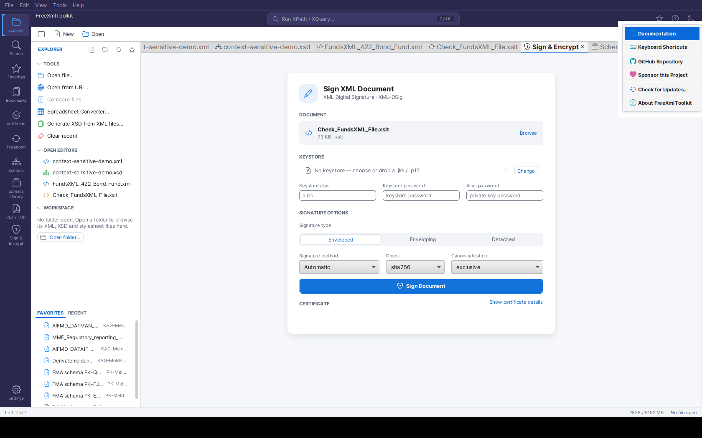

Workspace reference¶
Every part of the window in one place: menu bar, toolbar, the Explorer, Favorites and Bookmarks panels, the status bar and the Help menu. For a first walk through the window see the Tour of the workspace.
Panels and pages¶
Each activity in the activity bar has its own page in this documentation:
| Activity | Page |
|---|---|
| Explorer, Favorites, Bookmarks | this page |
| Search | Search and replace in files |
| Validation | Validate, Working with problems |
| Transform | Transform & query, Query console, XProc pipelines |
| Schema | The Schema panel, Design schemas |
| Schema Library | Schema Library |
| PDF / FOP | PDF with XSL-FO |
| Sign & Encrypt | Sign and encrypt |
| FundsXML and other extensions | Industry standards |
| Settings | Settings |
| Properties (right-hand panel) | Properties Inspector |
Menu Bar¶
The menu bar offers every shell action by name, with its keyboard shortcut next to it. Items that do not apply to the active document are greyed out (e.g. Type Editor is only available for XSD schemas, Save needs an open document).
| Menu | Contents |
|---|---|
| File | New…, Open…, Open in Large File Viewer…, Open from URL…, Open Recent (the last opened files), Open Favorite (all favorites, by folder, plus Manage Favorites…), Close Tab, Save, Save As…, Save All, Export View… (see Exporting a Graphical View), Settings…, Exit (Ctrl+Q; asks to save unsaved changes first) |
| Edit | Undo, Redo, Find…, Replace…, Find in Files…, Replace in Files…, Copy View as Image, Format Document, Minify, Insert Template… |
| View | The view modes (Text / Tree / Graphic / Overview / Preview), Side Panel, Properties Inspector, Query Console, Favorites Panel, Activities (jump to any activity), Show Constraints in Diagram, Show Constraints on Target Nodes, Toggle Light / Dark Theme, Full Screen |
| Tools | Validate, Run, Transform with XSLT…, Debug with XSLT… (Shift+F5), Run XSpec Tests, Debug Configuration…, Re-run Last Debug (Ctrl+Shift+F5), Toggle Breakpoint (F9), Run to Cursor (Ctrl+F10), Set Schema…, Generate Documentation…, Generate Sample XML…, Generate XSD from XML, Generate XSD from XML Files…, Type Editor, Compare with File…, Compare Folders…, Merge Files…, Spreadsheet Converter…, Convert to JSON…, Convert to XML…, Convert to YAML…, Add to Favorites |
| Help | Documentation, Keyboard Shortcuts, FundsXML Website and FundsXML Schema Docs (only while the FundsXML extension is enabled), Report a Problem… (when error reporting is enabled), GitHub Repository, Sponsor this Project, Check for Updates…, About FreeXmlToolkit - see Help Menu & About |
macOS¶
On macOS the menus appear in the system menu bar and follow the platform conventions:
- The FreeXmlToolkit application menu holds About FreeXmlToolkit, Check for Updates…, Settings… (Cmd+,), Hide FreeXmlToolkit (Cmd+H), Hide Others, Show All and Quit FreeXmlToolkit (Cmd+Q). These items are therefore not repeated in File and Help.
- A Window menu offers Minimize, Zoom and Bring All to Front.
- All shortcuts use Cmd instead of Ctrl. Because Cmd+H hides the application, Find and Replace is Alt+Cmd+F on macOS; full screen is Ctrl+Cmd+F (F11 works too).
Toolbar¶
The editor toolbar is a single slim row. Related actions sit in split buttons with a visible ▾ arrow menu: Save As / Save All live under Save ▾, Minify under Format ▾, Run Query / Run Transform / Run Pipeline under Run ▾, and Set XSD Schema… / Generate Documentation… / Type Editor… under Schema ▾.
The toolbar shows only what you can use right now. Without a document - on the Welcome page, or while a page such as Settings, Sign & Encrypt or Schema Library is in front - it shows just New and Open; the document groups (Save, Undo/Redo, Format, Query Console, Transform, Run, Schema, Validate) and the Text / Tree / Graphic view switch are hidden rather than shown greyed out. They come back as soon as a document tab is active.
There is no hidden "overflow" menu. Less frequent tools - Insert Template… (Ctrl+T), Compare with File… and Spreadsheet Converter… (Ctrl+E) - are in the Menu Bar (Edit and Tools menus) instead of the toolbar; their shortcuts work as before. Only when the window gets very narrow does the row wrap onto a second line as a fallback. The toolbar groups its actions three ways:
Labeled buttons (frequent actions)¶
- New (Ctrl+N) - Open the guided New File dialog to create an XML, XSD, XSLT, Schematron, JSON, XProc, XQuery, XPath, or HTML file from a template or schema
- Open (Ctrl+O) - Open one or more files
- Validate (F8) - Validate the active document; this is the toolbar's primary action and the only filled button in the row - it is filled in the green of the Validation workflow (see Colours: workflows and actions). XML validates against the bound XSD/Schematron if one is set, otherwise for well-formedness. The page you work on stays: the problems open in the PROBLEMS panel below the editor (at the first one), the status bar shows the result, and a short note at the bottom right says ✓ Valid or how many errors, warnings and hints were found. The Validation page shows the result too when you open it.
Split buttons (click the ▾ arrow for related actions)¶
Clicking the button itself runs the main action; clicking the small ▾ arrow opens a menu with the closely related actions:
| Split button | Primary click | Arrow (▾) menu |
|---|---|---|
| Save | Save the current tab (Ctrl+S) | Save As… (Ctrl+Shift+S) - save under a new name (the file chooser is pre-set to the tab's file type) · Save All - save every open tab at once |
| Format | Pretty-print the active document (Shift+Alt+F; note: Ctrl+Shift+F opens the Search panel, not document search). XML is indented by two spaces per level and every start tag stays on one line, however many attributes it carries | Minify - remove all insignificant whitespace |
| Run | Run the active document against the selected Input (Ctrl+Enter) - the primary click automatically runs whichever action the active file type supports | Run Query (XPath/XQuery) · Run Transform (XSLT) · Debug Transform (XSLT, Shift+F5 - the active stylesheet in the debugger) · Debug Query (XQuery, Shift+F5 - the same debugger on a query) · Profile Query (XQuery - the profiler on a query) · Debug Schematron (Schematron, Shift+F5 - the debugger on the Schematron's checks, against the selected Input; the primary click on a Schematron tab) · Run Pipeline (XProc) · Check Compatibility (XSLT, XQuery, XPath, Schematron; only in expert mode - checks the document against the chosen language version without running it) |
| Transform | Transform with XSLT… - opens the Transform panel on the active XML document, asks for a stylesheet if none is set, and runs it there (result in the OUTPUT panel) | Transform with XSLT… · Debug with XSLT… (Shift+F5) - the same, but in the debugger |
| Schema | Set XSD Schema… - bind an XSD to the active document for IntelliSense and validation | Set XSD Schema… · Generate Documentation… (HTML/PDF/Word for the active XSD) · Type Editor… (edit a named type of the active XSD) · Generate XSD from XML (infer a schema from the active XML document) · Generate XSD from XML Files… (infer one schema from several XML files) |
- Transform is a split button, see above: the primary click transforms, the ▾ arrow offers Debug with XSLT…
Icon-only buttons (hover for the tooltip)¶
- Undo (Ctrl+Z) / Redo (Ctrl+Y)
- Query Console - Shows / hides the bottom XPath/XQuery console (terminal icon). Ctrl+Shift+X shows or hides it; Ctrl+K (and the header's Run XPath / XQuery… pill) opens it and puts the cursor in the query.
Type-gating and the Input dropdown¶
The document actions act on the active document and are enabled only when they apply to its type (greyed out otherwise) - this covers Validate, Transform with XSLT…, the Run button and its menu entries (and Tools → Run / F5), and the Schema menu's Generate Documentation… / Type Editor… / Generate Sample XML… (also in Tools). The Input dropdown (labelled "Input: …", formerly Target) appears next to Run only while a query, XSLT, or XProc document is active and selects the XML document the run works on. See Editor Toolbar Document Actions and Query Documents & the Input Selector below.
Editor Toolbar Document Actions¶
Trigger per-document operations from the editor toolbar without leaving the editor or switching the left activity bar.
The editor toolbar includes a group of document actions that act on the active document. They are arranged as follows: Validate and Transform with XSLT… are their own buttons; Run Query / Run Transform / Run Pipeline are the Run ▾ split button (the primary click runs whichever of the three the active file type supports); Generate Documentation… and Type Editor… sit in the Schema ▾ split button's menu next to Set XSD Schema…. Each action is type-gated: it is enabled only when it applies to the active document's type, and disabled (greyed out) otherwise. Tools → Run and F5 follow the same rule: they only run XQuery, XPath, XSLT and XProc documents (Tools → Run is greyed out for other documents, and F5 does nothing). To validate, use F8, Tools → Validate, the toolbar's Validate button or the Validation panel's Run Validation - all four start the same validation run.
| Action | Applies to | What it does |
|---|---|---|
| Validate | XML, XSD, XSLT, Schematron, JSON | Validates the active document and lists any problems (or reports it is valid / well-formed). For an XML document this uses the bound XSD/Schematron if one is set; a JSON document uses its bound JSON Schema if one is set, otherwise it is checked for syntax only. |
| Transform with XSLT… | XML | Opens the Transform panel on the active XML document, asks you to pick a stylesheet if none is set, and runs it there - with the panel's parameters and output method; the result appears in the OUTPUT panel (including Save). Also available as Tools → Transform with XSLT…. |
| Generate Documentation… (Schema ▾ menu) | XSD | Lets you choose a format - HTML, PDF, or Word - and an output location, then generates the schema documentation there. |
| Type Editor… (Schema ▾ menu) | XSD | Lets you pick one of the schema's named types and opens it in a focused Type Editor tab. |
| Input (dropdown) | XQuery, XPath, XSLT, XProc | Selects the XML document the next run works on: Automatic (last active XML document), any open XML-family tab, or a file chosen from disk. Remembered per document. |
| Run Query (Run ▾) | XQuery, XPath | Runs the active query against the selected target and shows the result in the OUTPUT panel (Ctrl+Enter). |
| Run Transform (Run ▾) | XSLT | Runs the active stylesheet against the selected target, output format auto-detected from xsl:output (Ctrl+Enter). |
| Run Pipeline (Run ▾) | XProc | Runs the active pipeline with XML Calabash, the selected target feeding the source port (Ctrl+Enter). |
| Check Compatibility (Run ▾, expert mode) | XSLT, XQuery, XPath, Schematron | Checks the active document against the chosen language version without running it and lists the issues in Problems. |
These actions reuse the same engines as the corresponding activity-bar panels - they are simply a faster way to reach them.
Tip
Generate Documentation works from the schema's last-saved version on disk so that relative
xs:include / xs:import references resolve correctly. Save the XSD first to document your
latest edits.
Explorer Panel¶
Open the Explorer panel from the activity bar to manage files.
-
Header actions (top right): New file, Open folder, Refresh workspace and the star (Favorites quick access). New file opens the same guided New File dialog as the toolbar's New button. The sections appear from top to bottom in this order:
-
OPEN EDITORS - one row per open document. The active document is highlighted (blue, bold) and unsaved documents show a dot on the right. Click a row to switch to that document. The list shows about six rows; with more open documents it scrolls, so the workspace tree below keeps its space. The rows follow the order of the editor tabs - drag a tab to reorder both.
- Workspace - the file tree of the opened folder; the section is titled after the folder's name. Folders expand with their chevron; double-click (or Enter) opens a file. Only XML-family and JSON files are shown. While no folder is open, the section shows a short hint ("No folder open. Open a folder to browse its XML, XSD and stylesheet files here.") and an Open folder… button.
-
TOOLS - a collapsible section above the files with the file tools. It is open by default; whether you leave it open or closed is remembered. Transforming and Schematron-validating the selected files is done from the workspace tree's context menu; the tools of the other workflows (validate, transform, schema documentation, …) live in their own activities.
Row What it does Open file… Opens a file with a file chooser. Open from URL… Opens a file from a web address (same as File → Open from URL…). Compare files… With two files selected in the workspace tree: compares them side by side. With one file selected: asks for a second file and compares the two. With no selection: compares the active document with a file you pick (same as Tools → Compare with File…). Disabled while there is neither a selection nor an open document. Spreadsheet Converter… Converts between XML and Excel / CSV (same as Tools → Spreadsheet Converter…, Ctrl+E). Generate XSD from XML files… Infers one schema from the XML files selected in the workspace tree and opens it as a new tab; with no XML file selected, asks you to pick the files (same as Tools → Generate XSD from XML Files…). Clear recent Empties the RECENT list. -
FAVORITES | RECENT - two tabs at the bottom (drag the thin grip above them to change their height). FAVORITES lists all your favorites (uncategorized first, then by folder, the folder shown in grey after the name); a favorite whose file no longer exists is shown greyed out and struck through. Right-click for Open, Reveal in Workspace and Remove from Favorites. RECENT lists the recently opened files. A click opens the file. The chosen tab is remembered; at first start FAVORITES is shown when you have favorites. Ctrl+D adds the active document to your favorites; rename them and sort them into folders in the Favorites activity.
- Collapsible sections - the OPEN EDITORS, workspace and TOOLS section headers are clickable: click a header to collapse or expand its section (the chevron next to the title flips accordingly). Use this to give the file tree more room when you have many open editors.
Binding an XSD
The Explorer has no XSD picker. Bind a schema to the active document via the status-bar schema indicator, Tools → Set Schema… / the toolbar's Schema ▾ button, or the Validation panel's SOURCES section.
Transform and Validate from the Explorer¶
Run an XSLT stylesheet or a Schematron against XML files straight from the Explorer, without switching to the Transform or Validation activity first.
Select one or more XML files in the workspace tree (hold Ctrl or Shift while clicking to select several), then right-click them. The context menu offers:
| Entry | What it does |
|---|---|
| Open | Opens the selected file(s) in the editor. |
| Transform with <stylesheet> | Transforms the selection with the last-used stylesheet (the entry names it). Reads Transform with XSLT… while no stylesheet has been used yet - you are then asked to pick one. |
| Transform with Other Stylesheet ▸ | Lists your recently used stylesheets and Choose stylesheet…; picking one makes it the current stylesheet and runs the transform. |
| Validate with <Schematron> | Validates the selection with the last-used Schematron (the entry names it). Reads Validate with Schematron… while none has been used yet - you are then asked to pick one. |
| Validate with Other Schematron ▸ | Lists your recently used Schematrons, your Schematron Favorites, Choose Schematron… and Clear recent. |
| Compare Selected Files | Compares the two selected files side by side (enabled with exactly two files selected). |
| Generate XSD from Selected | Infers one schema from the selected XML files and opens it as a new tab. |
When nothing is selected in the tree, Transform and Validate use the active editor document (if it is XML).
The last-used stylesheet and Schematron are sticky and shared with the Transform panel and the Validation panel: both places draw from the same recent lists.
What Transform does depends on how many XML files are selected:
- One XML file (or the active document): the stylesheet runs and the result appears in
the docked Transform OUTPUT panel below the editor. HTML
dashboards render in the Preview (WebView). The output format is auto-detected from the
stylesheet's
xsl:outputdeclaration. - Several XML files: the Batch Transform tool tab opens, pre-loaded with those files, and the run starts automatically. Save the results with Save All….
What Validate does: the chosen Schematron is also bound to the active document, so the Validation panel and live validation use it too. The result is shown in the Validation activity: a single document runs through the normal single-file flow (problems list, detailed Schematron report), a multi-file selection through the batch flow with one RESULTS row per file. Batch runs additionally check each file against the active document's bound XSD (if any) - bind or clear the XSD in the Validation panel's SOURCES section to control that.
Tip
Primary workflow: choose your stylesheet once, then just select another XML file in the tree and right-click Transform with <stylesheet> again - the stylesheet stays put. For output-format overrides, parameters, watch-and-rerun, and the result table, use the full Transform panel.
Favorites Panel¶
Favorites Quick Access¶
Favorites can be opened from everywhere, without switching activities:
- the star in the header bar (next to ?) - available in every activity and also on the Settings, Schema Library and Signature pages,
- the star in the Explorer header and the Explorer's FAVORITES tab,
- File → Open Favorite.
The star menus list every favorite (whatever its type, grouped by folder once you use folders, missing files left out), followed by Add Active Document (Ctrl+D) and Manage Favorites… (opens the Favorites activity). Opening a favorite here counts for the Recently Used / Most Popular collections.
Favorites Activity¶
Open the Favorites panel from the star icon in the activity bar for one-click access to your saved files.
- Favorites are grouped by their folder as soon as you use folders (the rest gathers under Uncategorized); without folders they group by file type. Every entry shows a colored type icon.
- The search field filters the list by name or path as you type.
- Click a favorite to open it as an editor tab. Right-click for Open, Rename…, Move to folder (existing folders, (No folder), or New folder…), and Remove.
- The action rows at the top: Add current stars the active document, Manage… opens the management view described below.
Manage Favorites (editor area)¶
Click Manage… to open the full management view as a tab in the main editor area:
- A FOLDERS list on the left filters the table (All, the smart collections, Uncategorized, your folders) and offers New…, Rename…, and Delete (deleting a folder moves its favorites to Uncategorized - nothing is lost).
- Smart collections: Recently Used (favorites you actually opened, latest first) and Most Popular (most-opened first) - opening a favorite anywhere in the app feeds them automatically.
- The table lists Name / Type / Folder / Path: double-click the Name cell to rename inline, pick a different Folder directly in the cell, double-click a row to open the file, right-click to Open or Remove from favorites.
- The DETAILS pane (right) shows the selected favorite's path, type, added date and usage, plus an editable NOTES field (saved when you leave it).
- The search field (top right) filters across all favorites by name or path; Clean up removes favorites whose files no longer exist.
- Drag & drop: drop files onto the Favorites side panel to add them as favorites.
See Favorites System for more.
Bookmarks Panel¶
Mark lines in any text editor with Ctrl+F2 (or a click left of the line number), name them, number them 1–9 (Ctrl+Shift+digit sets, Ctrl+digit jumps) and move between them with F2 / Shift+F2. Bookmarks follow your edits, are kept across restarts and show as marks over the editor's scroll bar. The Bookmarks activity lists them for all files, grouped by file. See Bookmarks.
Status Bar¶
The schema indicator shows the schema loading lifecycle, so you can tell exactly when IntelliSense (XML) or schema validation (JSON) becomes available.
The status bar at the bottom of the window includes (left to right):
- The caret position (
Ln 1, Col 1), the character count of the active document and its file type label (XML, XSD, XSLT, …). -
A schema indicator showing the schema-binding state of the active document — an XSD for XML-family documents, a JSON Schema for JSON documents:
State Meaning Detecting XSD… (hourglass) The linked schema is being detected and parsed in the background - IntelliSense is not available yet. XSD: name (green check) The schema is loaded - IntelliSense and schema validation are available. No XSD (clickable chip) The document references no schema - IntelliSense is limited. Click the chip to bind one. XSD 1.1 schema / XSD 1.0 schema The active document is an XSD schema itself. The version comes from vc:minVersiononxs:schema; without it the schema counts as XSD 1.0 (1.1 features still validate). Clicking it does nothing.XSD error (amber warning) The document references a schema that could not be found or parsed - IntelliSense is unavailable. Bind one manually to fix it. For JSON documents the same four states read "Detecting JSON Schema…", "JSON Schema: name", "No JSON Schema" and "JSON Schema error", and refer to schema validation (JSON has no schema-driven IntelliSense).
A loaded schema's label also shows how it was bound: a plain "XSD: name" when the document declared the location itself, "XSD: name (catalog)" when an XML catalog entry resolved it (bookmark icon), "XSD: name (library)" when a Schema Library mapping resolved it (collection icon), and "XSD: name (manual)" when you picked it by hand — the tooltip adds the resolved catalog target or matched namespace/root element plus the schema's absolute path.
Click the indicator (in any state except for an open XSD schema) to choose a schema file (
.xsd, or.jsonfor JSON documents) and bind it to the active document; for XML the binding drives both IntelliSense and schema validation, for JSON it drives validation. (The editor toolbar's Schema button - Set XSD Schema… - does the same.) Hovering shows a tooltip explaining what the binding currently provides.The indicator is also a drop target: drop an
.xsdfile (or a.jsonschema, for JSON documents) from your file manager onto it to bind the schema to the active document in one move - it glows green while a loadable file hovers over it and red for a wrong file type (which is rejected). - An encoding label: the character encoding the file was read in - taken from a byte order mark or the XML declaration'sencoding="…", otherwise UTF-8 (a file that is not valid UTF-8 and declares nothing is read as windows-1252). Saving writes the file back in that encoding; change theencodingof the XML declaration to save in another one. Characters the encoding cannot hold are saved as character references such as€. - A save confirmation (right-hand side, green check) for three seconds after a save: Saved orders.xml (12:55:18), after Save All Saved 3 files (…) or No unsaved changes. It is shown again on every save, also when the file had no changes. - A last run item (right-hand side) showing the last recorded XSLT/XQuery/validation run - it appears only while Record execution statistics (Settings → Extensions → DEVELOPER) is on; click it to open the Execution Statistics tool tab. - A memory monitor showing the JVM heap usage as used / max MB. Click it to run garbage collection, which can free memory after working with large files. - The file path of the active document (or No file open).
After an Export¶
Whenever the application writes a file you asked for - Excel and CSV exports, reports, a view as image, query and transformation results, statistics, a submission ZIP, a folder of generated files - a dialog confirms where it was saved (the path can be copied) and offers:
- Open - the file in the program your system uses for it (Excel for
.xlsx, the browser for.html…); for a folder, Open Folder; - Show in Folder - selects the file in Explorer, Finder or your file manager;
- OK - closes the dialog.
Tick Don't show this again to get a short note at the bottom right instead, with an Open link; switch the dialog back on under Settings → Files → After an Export. Exports whose result already shows - a PDF in the preview, a result opened as a tab, documentation opened with Open after generation - do not ask. The command line never shows the dialog.
Help Menu & About¶
Help is not a side panel - it lives in the Help menu of the menu bar. The ? button in the header bar and the F1 key open the same menu as a popup, right where you are working. It contains:


| Item | What it does |
|---|---|
| Documentation | Opens the online documentation |
| Keyboard Shortcuts | Lists all keyboard shortcuts |
| FundsXML Website / FundsXML Schema Docs | Only while the FundsXML extension is enabled |
| Report a Problem… | Sends an anonymous error report (only while error reporting is enabled, see below) |
| GitHub Repository | Opens the project page on GitHub |
| Sponsor this Project | Opens the GitHub Sponsors page |
| Check for Updates… | Looks for a newer version |
| About FreeXmlToolkit | Shows the version and build, licenses and links |
On macOS, Check for Updates… and About FreeXmlToolkit are in the FreeXmlToolkit application menu instead (see macOS). To find out which version you are running, open About FreeXmlToolkit.
-
Sponsor this Project opens the project's GitHub Sponsors page in your browser. The same link is in the About dialog, as a small banner on the Welcome page and under Settings → Extensions → SUPPORT THE PROJECT.
-
Report a Problem… opens the Send Error Report dialog. Describe what you were doing, optionally leave an email address if you would like a reply, and click Send. The report is sent anonymously - no GitHub account is needed. The collapsible Preview of the data that will be sent shows exactly what is transmitted.
- The About dialog offers the same Report a problem… button next to Report an issue (which opens the GitHub Issues page).
- When an error dialog appears, it has a Send error report… button that opens the same dialog. Tick Include technical details to attach the anonymous error signature (exception type and code locations - never messages, paths or content).
These buttons are only shown while Send anonymous error reports is enabled in Settings. See Privacy & Anonymous Telemetry for details.